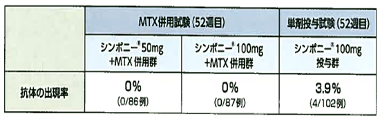
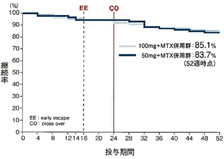

７．ヒト型抗体のため、抗体発現頻度が低いです

- ●SIMはヒト型抗体であるためヒトTNFαと同一のアミノ酸配列を有します。そのため、抗体発現頻度が０～3.9％（国内）と低く二次無効が少ないです。
- ●二次無効が少ないため、GO-FORTH試験52週時の継続率は50㎎83.7％、100㎎85.1％と高いです。
血清中抗ゴリムマブ抗体の出現率

GO-FORTH Study 52週時点の継続率


一般的に抗体に含まれるマウス部分が少ない程、免疫原性が低いとされていますが、完全ヒト型のヒュミラは米国治験で17%、日本で44%に中和抗体の発現を認め、「完全ヒト型＝免疫原性が低い」とはなっていないようです。ACTはIL-6シグナル阻害によるB細胞からの抗体産生を抑える作用があります。また、薬剤量不足が疑われる際にはQW投与のオプションもあります（⇒次ページに続く）
シンポニーパンフレットより